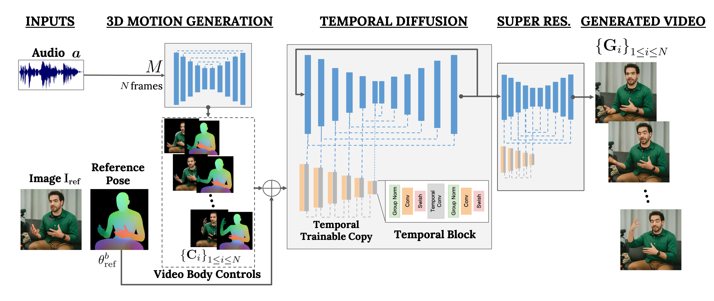

VLOGGER: Multimodal Diffusion for Embodied Avatar Synthesis
Enric Corona, Andrei Zanfir, Eduard Gabriel Bazavan, Nikos Kolotouros,
Thiemo Alldieck, Cristian Sminchisescu
description Paper description Supp bookmarks Project downloading Dataset play_circle_filled Video
Abstract
We propose VLOGGER, a method for text and audio-driven talking human video generation from a single input image of a person, which builds on the success of recent generative diffusion models. Our method consists of 1) a stochastic human-to-3d-motion diffusion model, and 2) a novel diffusion based architecture that augments text-to-image models with both temporal and spatial controls. This approach enables the generation of high quality videos of variable length, that are easily controllable through high-level representations of human faces and bodies. In contrast to previous work, our method does not require training for each person, does not rely on face detection and cropping, generates the complete image (not just the face or the lips), and considers a broad spectrum of scenarios (e.g., visible torso or diverse subject identities) that are critical to correctly synthesize humans who communicate.
We evaluate VLOGGER on three different benchmarks and show that the proposed model surpasses other state-of-the-art methods in image quality, identity preservation and temporal consistency. We collect a new and diverse dataset MENTOR one order of magnitude bigger than previous ones (2,200 hours and 800,000 identities, and a test set of 120 hours and 4,000 identities) on which we train and ablate our main technical contributions. We report the performance of VLOGGER with respect to multiple diversity metrics, showing that our architectural choices benefit training a fair and unbiased model at scale.
How does VLOGGER work?

Our goal is to generate a photorealistic video of variable length depicting a target human talking, including head and gestures. Our framework, which we call VLOGGER, is a two-stage pipeline based on stochastic diffusion models to model the one-to-many mapping from speech to video. The first network takes as input an audio waveform to generate intermediate body motion controls, which are responsible for gaze, facial expressions and pose over the target video length.
The second network is a temporal image-to-image translation model that extends large image diffusion models, taking the predicted body controls to generate the corresponding frames. To condition the process to a particular identity, the network also takes a reference image of a person.
Diversity
Our model generates a diverse distribution of videos of the original subject, with a significant amount of motion and realism. The right-most part shows pixel diversity as obtained from 80 generated videos. The person moves head and body significantly (red means higher diversity in pixel color) while the background is kept fixed, and despite the diversity all videos look realistic.
Next, we show an overview of applications and results.
Video Editing
One of the main applications of our model is on editing existing videos. In this case, VLOGGER takes an video and changes the expression of the subject by e.g. closing the mouth or the eyes. In practice, we leverage the flexibility of the diffusion model by inpainting image parts that should change, making the video edits consistent with the original unchanged pixels.
Generation of Moving and Talking People
Several examples on talking face generation given just a single input image and a driving audio.


Video Translation
One of the main applications of this model is on video translation. In this case, VLOGGER takes an existing video in a particular language, and edits the lip and face areas to be consistent with new audios, e.g. in Spanish.
Publication
VLOGGER: Multimodal Diffusion for Embodied Avatar Synthesis
Enric Corona, Andrei Zanfir, Eduard Gabriel Bazavan, Nikos Kolotouros, Thiemo Alldieck and Cristian Sminchisescu
in arXiv
Project Page Paper Bibtex
@inproceedings{corona2024vlogger,
Author = {Corona, Enric and Zanfir, Andrei and Gabriel Bazavan, Eduard and Kolotouros, Nikos and Alldieck, Thiemo and Sminchisescu, Cristian}
Title = {VLOGGER: Multimodal Diffusion for Embodied Avatar Synthesis},
Year = {2024},
booktitle = {arXiv},
}
Citation
@inproceedings{corona2024vlogger,
Author = {Corona, Enric and Zanfir, Andrei and Gabriel Bazavan, Eduard and Kolotouros, Nikos and Alldieck, Thiemo and Sminchisescu, Cristian}
Title = {VLOGGER: Multimodal Diffusion for Embodied Avatar Synthesis},
Year = {2024},
booktitle = {arXiv},